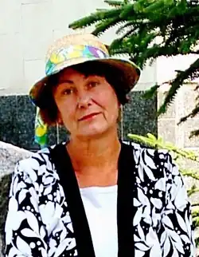
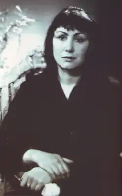

Пономаренко Любов Петрівна народилася 25 травня 1955 року в селі Іванківці Срібнянського району на Чернігівщині. Закінчила Ніжинський державний педагогічний інститут імені М. В. Гоголя (1978). Працювала вчителем російської мови та літератури на Срібнянщині, завідуючою відділом в Срібнянській райгазеті. З 1987 року мешкає на Полтавщині. Працювала в школах та редакціях райгазет Оржицького і Гребінківського районів. З 1999 року – власний кореспондент Всеукраїнської громадсько-політичної газети "Зоря Полтавщини". Мешкає і працює в м. Гребінка.
Твори друкувалися в багатьох газетах і часописах, видавалися в колективних збірниках та антологіях, зокрема в антології української "жіночої" прози та есеїстики другої половини XX – початку XXI століття (авторський проект Василя Габора) "Незнайома антологія" (Львів, 2005) за кордоном – в Німеччині та Японії, в альманасі "Біла альтанка" (Полтава, 1996).
Автор книг новел, оповідань та повістей "Тільки світу" (Київ, 1984), "Дерево облич" (Київ, 1999), "Ніч у кав'ярні самотніх душ" (Миколаїв, 2004), "Портрет жінки у профіль з рушницею" (Київ, 2005). Лауреат літературних премій: міжнародної імені Олеся Гончара (2000), всеукраїнської "Благовіст" (1998) та обласної імені Панаса Мирного (2005). Член Національної спілки письменників України з 1987 року.